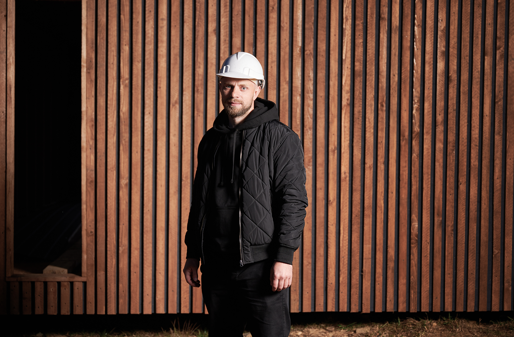

Branding
Proiect
Subtitlu / domeniu

01 Context
Ce brand / tip de proiect este (ex: branding, social media, identitate vizuală). Această informație se va actualiza cu descrierea specifică fiecărui proiect.
02 Scopul
Ce trebuia rezolvat — claritate, imagine nouă, coerență — și ce provocare a adus proiectul.
03 Soluția
Ce am făcut concret — concept, identitate, design, organizarea sistemului vizual, decizii cheie luate în timpul procesului.
04 Rezultatul
Ce a obținut clientul — claritate, imagine coerentă, impact vizual — și cum a fost primită soluția de audiență.